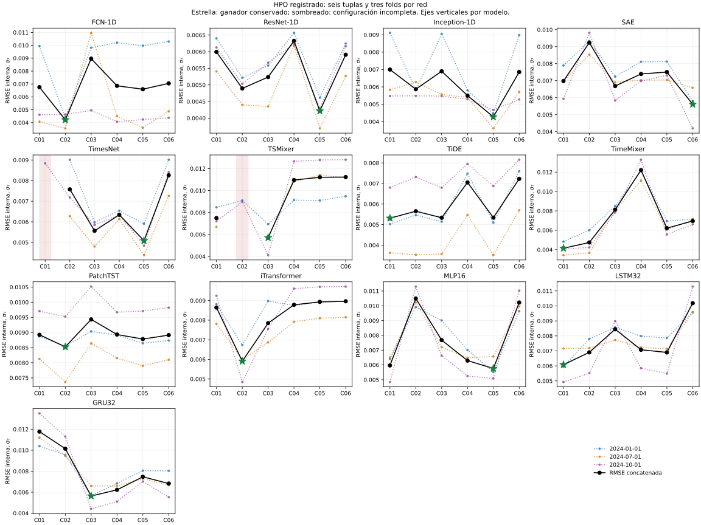

Correcciones metodológicas posteriores al benchmark#
Primera ampliación: 15/11/2026. Estado vigente actualizado el 16/11/2026. Se ejecutan comprobaciones adicionales de datos, efectos, regímenes y predictores congelados. La ruta continúa siendo F2a, series de tiempo. El catálogo conserva arquitecturas definidas: NAS no aplica.
La evidencia adicional del 16/11 (§65) completa los controles que dependían de las entradas reales de prueba y ejecuta una nueva IUT CPU. Los resultados y límites vigentes se presentan primero; los bloqueos y planes anteriores se conservan al final como antecedentes fechados.
La ampliación parte de la versión 0bdbc42b. Los planes se registran antes de sus respectivos cálculos, después de conocer el benchmark. Es evidencia posterior y exploratoria, no una recuperación de cegamiento o de preregistro histórico. Se conserva la A2 original, SHA-256 879e2ce52709657a06bc6c009f0cd553423f2eaa0bbdf16dc7f5844dfec9fcc1, y la decisión primaria: ningún contraste de mejora mayor que δ rechaza después de Holm20.
Efectos estandarizados: veinte contrastes completados#
El plan fechado precede al nuevo cálculo. Para cada candidato y referencia se calculan seis ganancias brutas de RMSE, referencia menos candidato, y
Se ejecutan 20.000 remuestreos de pares de semillas, sin remuestrear fechas, para un IC percentil marginal del 95 %. Los veinte efectos y sus IC son estimables; el archivo informa las réplicas de varianza nula. Persistence conserva una trayectoria determinista reutilizada en las restas; no se inventan seis ajustes clásicos.
Candidato |
Referencia |
d de Cohen pareado |
IC95 % entre semillas |
|---|---|---|---|
SAE |
GRU32 |
0,5477 |
[−0,2403; 1,9032] |
SAE |
Persistence |
1,1497 |
[0,4361; 3,7164] |
Esta incertidumbre describe optimización condicionada al calendario conocido, con sólo seis pares. No sustituye los IC temporales de la ganancia original, no contrasta por sí sola una mejora mayor que δ y no cambia RQ1. Un IC positivo de d_z frente a Persistence y el no rechazo temporal primario responden a fuentes de variación distintas.
RQ2: deterioro relativo en alta volatilidad#
Se ejecuta la especificación secundaria de §1. El régimen es conocido al emitir: σ₇(t−1)>0,024247163097617024, cuantil fijado con 350 etiquetas de 2023. El primer origen utiliza σ₇ del 31/12/2024; no se agrupa por la volatilidad contemporánea desconocida. Hay 121 fechas altas y 487 normales.
Para cada régimen se calcula la RMSE de cada trayectoria y después su promedio. La erosión es la ventaja normal frente a GRU32 menos la ventaja en régimen alto. Se contrasta H₀: erosión≤δ, con δ=0,00025772842664981106. El bootstrap mantiene las seis trayectorias fijas y remuestrea conjuntamente fechas y etiquetas de régimen en bloques móviles de 14 días: 20.000 réplicas, diez contrastes estimables y Holm10. Los bloques 7/28 son sensibilidad descriptiva; no se elige el resultado más favorable.
Candidato |
Erosión de ventaja RMSE |
IC95 % marginal |
p Holm10 |
Erosión mayor que δ |
|---|---|---|---|---|
FCN-1D |
0,002896508 |
[0,000541703; 0,004697754] |
0,011699 |
Sí |
ResNet-1D |
0,001783271 |
[0,000015223; 0,003058097] |
0,039598 |
Sí |
Inception-1D |
0,001107331 |
[−0,000081565; 0,001960329] |
0,076496 |
No establecida |
SAE |
0,000359544 |
[−0,000331453; 0,000856260] |
0,335083 |
No establecida |
TimesNet |
0,002228064 |
[0,001045407; 0,003298656] |
0,001600 |
Sí |
TSMixer |
0,002888930 |
[0,001834438; 0,003869355] |
0,000500 |
Sí |
TiDE |
0,003293397 |
[0,001840420; 0,004391267] |
0,000500 |
Sí |
TimeMixer |
0,001440858 |
[0,000283023; 0,002746583] |
0,081196 |
No establecida |
PatchTST |
0,006695856 |
[0,000767463; 0,011439517] |
0,014999 |
Sí |
iTransformer |
0,002607280 |
[0,001158197; 0,004099091] |
0,004200 |
Sí |
Siete candidatos presentan deterioro relativo mayor que δ, con el ajuste declarado. Esto no supone que todos tuvieran ventaja positiva en régimen normal: el CSV conserva las dos ganancias. Para SAE, Inception y TimeMixer no se establece ese deterioro tras Holm10; no equivale a demostrar robustez o equivalencia. Los IC son marginales y no se convierten en simultáneos por acompañarlos de p ajustados.
La inferencia depende de la adecuación del remuestreo temporal a esta cronología. No hay potencia específica de RQ2 demostrada ni extrapolación a otros mercados. La asociación entre régimen y deterioro tampoco identifica un efecto causal de la volatilidad.
RQ2, diez contrastes y Holm10 · Sensibilidad 7/14/28 · 608 etiquetas causales · Soporte por régimen.
Datos reales y controles ejecutados el 16/11/2026#
Se recibieron y verificaron los veinte ZIP mensuales originales, 42.542.826 bytes, para enero de 2025–agosto de 2026. Sus huellas coinciden con el manifiesto previo; la copia repetida de agosto no cuenta como un mes adicional. El recibo de admisión y el derivado diario verificado permiten revisar la procedencia. El bloqueo de descarga anterior ya no impide estos cálculos.
La auditoría común real reconstruye 655 entradas train, 53 de calibración y 608 de prueba, sin imputar ni comprimir el calendario; conserva 12 controles PASS, tres PARTIAL y uno no aplicable. Los tres parciales remiten a controles separados, ahora ejecutados, y no se convierten retrospectivamente en PASS dentro de ese archivo:
Control adicional ejecutado |
Resultado y alcance |
|---|---|
78/78 checkpoints aprobados en 390 condiciones de aislamiento, lote, orden e intervención futura sobre seis ventanas reales de desarrollo. Estados, buffers y escaladores inmutables; no es una prueba de esas condiciones en las 608 fechas. |
|
36/36 condiciones de truncamiento y perturbación futura aprobadas, 6.612 comparaciones idénticas y 2.825 recibos ARIMA de pronóstico antes de observar. Actualizar estado filtrado con coeficientes fijos se distingue de reajustar. |
|
Trece redes realmente entrenadas, una semilla y recetas fijas, permutando sólo etiquetas de train por bloques7. IUT de ganancia>δ y correlación positiva, 10.000 remuestreos por bloques14 y Holm13: cero alertas ajustadas. Algunos p brutos son menores que 0,05; no se afirma ausencia universal de fuga. |
|
Train655 frente a test608, cinco folds purgados y 999 permutaciones con reajuste: AUC OOF=0,95254, p=0,001. Hay cambio de distribución detectable. Los folds del clasificador pueden usar filas posteriores al bloque retenido: es un diagnóstico de dominio, no un backtest causal. No se presenta como AUC indistinguible de 0,5 ni como prueba de fuga por sí sola. |
La explicación del cambio reproduce AUC 0,95254 con los 35 atributos; al separar grupos obtiene 0,49734 con OHLC y 0,90265 con volumen. Es una localización descriptiva, sin atribución causal ni una descomposición aditiva de AUC. Se conserva la alerta y se vinculan métricas trimestrales, RQ2 y cobertura condicional al límite de transporte. No se retiran atributos ni se reajusta A2 después de ver test.
Inferencia: brecha CPU, periodos originales y RQ3 completa#
El diagnóstico de brecha CPU del 15/11 continúa ejecutado: riesgos comparables train/cal, seis semillas, t con cinco grados de libertad y Holm13. Dos de trece redes establecen tolerancia condicional respecto a δg; once no la establecen. Su alcance no demuestra ausencia general de sobreajuste ni paridad CUDA. Las dos puertas anteriores con tolerancia 10⁻⁷ y las diez alertas posteriores se conservan con sus valores originales.
La comparación formal de periodos originales A100 usa calibración53 y prueba608 de los mismos predictores. La t bilateral sobre seis diferencias por red y Holm13 rechaza en seis casos: mayor RMSE de prueba en FCN, PatchTST e iTransformer; menor en MLP16, LSTM32 y GRU32. Para SAE, diferencia media −0,000225714 y p Holm=0,53727. La sensibilidad por los 64 cambios de signo, con su propio Holm13, no rechaza. Los tres clásicos conservan reporte descriptivo R=1. Calibración no es validación HPO independiente; estos resultados no identifican sobreajuste como causa ni demuestran equivalencia o consistencia a partir del no rechazo.
La nueva IUT CPU de RQ3 sí se ejecutó completa, con plan propio anterior a sus nuevas pasadas. Se generaron 47.424 pronósticos de prueba, 78 pesos recuperados × 608 fechas, sin alterar estados; se comprobaron identidades de los riesgos train/cal reutilizados. La ganancia predictiva procede de esas nuevas proyecciones CPU, y el coste de las mediciones CPU residentes: no se mezcla precisión GPU con latencia CPU.
El componente de ganancia>δ usa 20.000 remuestreos del calendario por bloques14 con las seis trayectorias fijas; el componente de reducción de latencia remuestrea 20.000 veces los 100 bloques completos de medición. Para cada candidato frente a GRU32 se calcula p_IUT=max(p_ganancia,p_coste), seguido de Holm10. Los diez p de coste, IUT y Holm10 son 1: cero mejoras conjuntas establecidas. Para SAE, la ganancia CPU puntual es 0,000197731, menor que δ, con p predictivo=0,73291. Diez IUT ejecutadas · recibo y límites.
Esta evidencia posterior supera el alcance del argumento anterior por componente necesario: ahora ambos componentes están estimados. El plan original detenido por paridad no se declara completado, ni se acredita equivalencia, una nueva prueba ciega o una ventaja en otro hardware. A2 y RQ1 permanecen intactos.
Reproducción y costes: alcance vigente#
§65 reúne la cronología recuperada de los ajustes y las nuevas conciliaciones de coste, con sus fuentes y límites. La repetición posterior del entrenamiento en CPU está completada con las recetas, semillas y épocas fijadas antes de sus ajustes: 78 ajustes neuronales nuevos, tres clásicos, calibración53, congelación81, admisión20ZIP y evaluación608, seguida del análisis primario de 20.000 remuestreos. Sus resultados y recibos nuevos no sustituyen los resultados A100 originales ni acreditan paridad entre backends. Los 83 workers exitosos y fallos previos suman 6.853,632183 s; el intento final reutilizó 80 workers exitosos verificados de V3 y sólo ejecutó los tres restantes, sin volver a entrenar las redes. No repitió HPO, NAS, ablaciones ni toda la campaña histórica; B21 conserva ese alcance parcial.
RQ2, los veinte efectos con IC y las trece pruebas de brecha CPU ya están ejecutados; no se enumeran como cálculos pendientes. La potencia piloto de RQ1 y su MDE conservan su limitación declarada, y la cronología conocida mantiene el alcance retrospectivo. NAS sigue sin aplicar.
Archivo documental: auditorías y cierres del 15/11 y primer corte del 16/11
Este bloque conserva los resultados, enlaces y estados del corte anterior a recibir los veinte ZIP. Sus menciones BLOCKED_INPUTS, controles no ejecutados e IUT sólo deducida corresponden a ese corte; el estado vigente está en las secciones anteriores y en §65. Sus archivos descargables mantienen sus bytes originales.
Auditoría de los datos y transformaciones disponibles
Se ejecuta una auditoría adicional sobre datos reales, con especificación fechada. Los 655 ejemplos train y 53 de calibración se reconstruyen a partir de los CSV originales. La reconstrucción directa de σ₇ con ocho cierres coincide con las etiquetas guardadas y conserva el día incompleto del 24/03/2023, sin imputar ni comprimir el calendario.
Se verifican ocho controles, siete quedan parciales y uno no aplica. Son controles definidos por esta ampliación, no una puntuación o porcentaje de aprobación de la guía.
Alcance |
Evidencia ejecutada |
Límite que permanece |
|---|---|---|
IDs, embargo y disponibilidad |
Calendarios, cortes y soportes causales cotejados; la historia pasada compartida se distingue de etiquetas futuras. |
Los metadatos no sustituyen la lectura del contenido de prueba. |
Preparación común |
Ventanas D7, escalado y firmas de train/cal coinciden con los 78 ajustes neuronales documentados. Modificar datos posteriores a octubre de 2024 no cambia el train ni su escalador. |
La prueba común no certifica todas las operaciones aprendidas dentro de cada port. |
Escaladores físicos |
81 registros recuperados y verificados; los neuronales conservan los parámetros e IDs de las 655 observaciones de ajuste. |
Son artefactos de la reproducción documentada, con identidad propia. |
Contenido y vecinos |
Huellas y vecinos del desarrollo realmente disponible, con umbral fijo y sin alertas bajo esa regla. |
Las ventanas OHLCV de las 608 fechas de prueba no están disponibles en este entorno. |
Controles con ajustes |
Se mantienen separados de la auditoría sin entrenamiento. |
El adversarial train/test y las etiquetas permutadas requieren los insumos reales y ejecución registrada. |
No hay fallos de datos demostrados en los controles ejecutados; la auditoría integral sigue parcial. Los respaldos públicos conservan objetivos y pronósticos de prueba, pero excluyen su OHLCV crudo. La recuperación oficial de los veinte ZIP está bloqueada por el transporte de red. No se fabrican entradas a partir de predicciones ni se sustituye el mercado o periodo. El resultado incluye un indicador de disponibilidad que impide presentar controles train/test no ejecutados como aprobados.
Inferencia congelada: comprobación numérica y límite de ejecución
Se recuperan y verifican 81 predictores desplegables y 324 JSON asociados, incluidos 78 pesos neuronales, escaladores y trayectorias. Los pesos recuperados proceden de la reproducción limpia documentada; conservan sus propias huellas y no se renombran como archivos serializados del freeze original.
El plan estadístico posterior fija, antes de las nuevas pasadas, el contraste de δg entre seis semillas, su familia Holm13 y el diseño de RQ3. La primera especificación CPU exige predicciones train/cal en evaluación, batch1 y pesos inmutables, y comprueba la calibración contra el registro A100 con tolerancia absoluta 10⁻⁷ en σ₇.
La ejecución se detiene en SAE, semilla 271804, con diferencia máxima 1,1920928955078125×10⁻⁷, después de completar 21 predictores. Se conserva el fallo. Una alternativa numérica CPU con MKLDNN desactivado, registrada antes de sus llamadas y manteniendo el mismo umbral, reproduce ese límite y también se detiene; su recibo y las fuentes anteriores permanecen disponibles.
Estas pasadas parciales no acreditan la puerta de validación de los 78 predictores. No se usan sus 21 riesgos para anunciar un contraste de todo el catálogo, no se ejecutan latencias bajo ese plan y no se informa una IUT de RQ3 como completada. Es un límite de la validación numérica CPU frente a la referencia CUDA, distinto de una fuga demostrada o del resultado de la reproducción histórica A100. La tolerancia original no se amplía después de observar el fallo.
Suplemento CPU: riesgos comparables y costes medidos
Se registra un suplemento diferente, con plan de inferencia y plan estadístico propio. Mantiene CPU eager, FP32, batch1, dos hilos y las identidades exactas de pesos y escaladores. 10⁻⁷ continúa como alerta publicada, sin excluir modelos o declarar aprobadas las puertas fallidas anteriores. Las correcciones de cableado y sus intentos se preservan; los métodos, márgenes y familias no se eligen según sus resultados.
Se completan 78/78 predictores, con 51.090 predicciones de train y 4.134 de calibración, estados intactos y diez alertas. La mayor desviación frente a las referencias GPU es 2,1606683731079102×10⁻⁷ en σ₇. Los recibos de inferencia y latencia identifican esos resultados como diagnóstico CPU, sin afirmar equivalencia numérica a CUDA.
Brecha respecto de δg en el diagnóstico CPU
Para cada red se contrasta H₀: media(g)≥δg frente a H₁: media(g)<δg, con g=RMSE_calibración−RMSE_train, seis pares de inicialización, t con cinco grados de libertad y Holm13. Los riesgos se evalúan en el mismo CPU, modo, lote y unidades. Los IC del 95 % son marginales entre semillas. La aproximación describe optimización condicionada a train655/cal53; no supone fechas iid ni vuelve independiente una calibración ya usada para piloto e intervalos.
Modelo |
Brecha media CPU |
IC95 % entre semillas |
p Holm13 |
Tolerancia condicional |
|---|---|---|---|---|
SAE |
0,000427265 |
[0,000194211; 0,000660319] |
1,000000 |
No establecida |
GRU32 |
0,000572616 |
[0,000409073; 0,000736158] |
1,000000 |
No establecida |
PatchTST |
−0,001857784 |
[−0,002327136; −0,001388433] |
0,000504 |
Establecida para este diagnóstico |
iTransformer |
−0,001515946 |
[−0,001724220; −0,001307673] |
0,000024 |
Establecida para este diagnóstico |
Dos de trece redes establecen esa tolerancia condicional; en las otras once no queda establecida. Una brecha negativa también puede reflejar que calibración sea un periodo más sencillo. PatchTST e iTransformer no se convierten por ello en los mejores modelos ni se acredita adecuación conjunta; sus resultados de prueba y los restantes criterios se conservan. Para SAE, el nuevo análisis no permite afirmar que la brecha sea inferior a δg.
Trece contrastes CPU, magnitudes, IC y Holm13.
Coste del mismo backend CPU
Se registran 12.000 operaciones, 6.000 pares y 100 bloques de medición, conservando seis semillas por bloque, entradas de desarrollo comunes, calentamiento y orden candidato–GRU intercalado. El contraste de coste remuestrea 20.000 veces bloques completos, con familia Holm10 propia. No se confirma reducción de latencia para ninguno de los diez candidatos; sus diferencias puntuales medidas frente a GRU son positivas.
Estos tiempos describen forwards CPU residentes, excluyendo carga y preparación. No reemplazan los perfiles históricos A100 ni se mezclan con predicciones GPU para declarar una mejora conjunta de despliegue CPU. La IUT de RQ3 del plan anterior sigue sin ejecutarse; reducción de coste, equivalencia y mejora predictiva son afirmaciones distintas.
Diez comparaciones de coste CPU · 1.000 medias de bloques pareados · Resumen y límites del suplemento · Recibo estadístico.
Controles pendientes de los insumos de prueba
El recibo de preparación conserva BLOCKED_INPUTS. Hay un ejecutor específico del catálogo actual, con catorce pruebas puras aprobadas, para el adversarial train/test y los trece controles neuronales con etiquetas permutadas. No se han ejecutado esos ajustes ni sus contrastes reales. Las pruebas unitarias no se cuentan como controles científicos superados.
E1 documenta que recibió y verificó los veinte ZIP mensuales, 42.542.826 bytes, y que los brutos permanecieron privados: §8.3 de E1. Su paquete público contiene instrucciones y manifiestos. Para reanudar se necesita el derivado diario original o esos mismos veinte ZIP, comprobados contra sus huellas; publicar instrucciones de obtención no implica que todos los entornos tengan permitido acceder a la fuente.
Cobertura HPO y costes recuperados
La recuperación documental concilia 234 oportunidades: 231 resultados válidos, dos fallos y un desenlace desconocido. Se conservan los resultados parciales de las configuraciones incompletas. De 78 configuraciones, 76 son elegibles y se reproducen los trece ganadores originales a partir de la RMSE concatenada de sus tres folds.
Se recuperan 61 reutilizaciones con recibos de coste original, 170 recibos de duración medida y 173 cargos de campaña. Las duraciones conocidas de fases suman 20.526,76 s; los cargos del ámbito recuperado suman 25.976,94 s. Son magnitudes de ámbitos distintos: no se suman entre sí ni se presentan como coste integral del HPO. Los 1.860 s asociados a la sesión perdida son un cargo conservador, no una duración de entrenamiento medida. Los costes desconocidos siguen sin rellenarse con cero.

La tabla de cobertura identifica valores explorados, parámetros fijos y posición del ganador. Las seis tuplas cambian varias dimensiones simultáneamente; no identifican la importancia aislada o causal de cada hiperparámetro. Se publica esa limitación en lugar de asignar una importancia ficticia. La recuperación no amplía el espacio, no reentrena y no constituye NAS.
234 oportunidades · 78 configuraciones · Conciliación por modelo · Plan y procedencia.
Trazabilidad y presupuesto
El recibo de ejecución conserva fechas, software y hashes del programa y entradas, comprobados nuevamente al terminar. El manifiesto estadístico y las instrucciones de repetición permiten revisar los resultados. Se aprobaron siete pruebas analíticas y de invariancia del cálculo.
El diario complementario vigente continúa el cierre histórico de 84 horas autorizadas, sin reiniciar el contador. Reserva antes de cada comando científico y carga su tiempo real, incluidos fallos; libera el saldo no usado. La unidad es tiempo de pared acumulado de comandos científicos, no GPU activa ni coste monetario. Las comprobaciones documentales, descargas y empaquetado se distinguen de esas ejecuciones.
La potencia piloto de RQ1, 12,3 %, y su diferencia mínima detectable ya estaban declaradas conforme a la excepción presupuestaria de §9.2 de la guía. Esta ampliación no aumenta retrospectivamente esa potencia ni la transfiere a RQ2/RQ3.
Seguimiento del 16/11/2026: respuestas y reproducción
Este seguimiento conserva los resultados y planes anteriores. Corrige las menciones vigentes que todavía describían RQ2, los veinte efectos con IC y las pruebas de brecha CPU como no ejecutados. Los bloques históricos conservan su fecha y contenido.
Respuesta condicionada de RQ3
No se establece una mejora conjunta de error y coste en el entorno CPU medido. Los diez p-valores sin ajustar del componente de reducción de latencia son 1. Para cualquier componente predictivo compatible y válido, con p-valor \(u\in[0,1]\), la regla registrada implicaría
La condición necesaria de coste basta para deducir que una IUT compatible con este componente no rechazaría, tampoco tras Holm10. La tabla de diez límites, la derivación y fuentes y el alcance del argumento permiten comprobarlo sin nuevas predicciones ni remuestreos.
Es una deducción exploratoria posterior por componente necesario, no diez IUT ejecutadas. No se estima el componente predictivo CPU, no se mezclan precisión GPU y latencia CPU y no se transforma el límite en un p-valor conjunto observado. Se mantiene sin ejecutar la IUT integral del plan original. La conclusión no demuestra equivalencia, ausencia de ventajas predictivas ni imposibilidad de mejora en otro hardware.
Datos de prueba y alcance del cierre
El recibo de acceso a los datos registra un intento por URL para el ZIP oficial de enero de 2025 y su CHECKSUM: ambos quedaron bloqueados por el túnel HTTPS con CONNECT 403 y cero bytes. No es una respuesta de Binance que pruebe inexistencia del archivo. No se repitieron búsquedas masivas ni se cambiaron proxies. El estado continúa siendo BLOCKED_INPUTS.
Para ejecutar la auditoría del contenido de las 608 fechas y los controles preparados se necesita known_E1_daily.csv con su identidad original, o los veinte ZIP mensuales de enero de 2025 a agosto de 2026 verificados contra el manifiesto. Los objetivos y pronósticos públicos no sustituyen esas entradas. Continúan parciales la auditoría integral, los controles adversariales y de etiquetas permutadas, la consistencia validación–prueba del plan original y la reproducción de toda la campaña desde sus datos originales.
Un comando de reproducción analítica ejecutado
El orquestador completó 18/18 etapas disponibles, en 323,26 segundos contabilizados: los doce paquetes v2, una nueva auditoría de desarrollo, efectos/RQ2 y estadísticas CPU, conciliación HPO, inferencia primaria con 20.000 remuestreos, calibración/errores y reconstrucción del libro desde su ZIP. D02 ejecuta forwards de implementación con pesos iniciales, no entrenamientos de mercado. El recibo de ejecución identifica los comandos y sus fuentes exactas.
Se verifican diferencia cero en los veinte contrastes primarios y ocho tablas de correcciones, y cuatro tablas HPO idénticas byte a byte. El resumen de comprobación y su manifiesto conservan esa evidencia. La fuente y el catálogo usados realmente en la ejecución se archivan; la versión actual añade correcciones de CLI y comprobación de dependencias, verificadas con nueve pruebas.
El resultado global sigue siendo parcial, con salida deliberada 2: este comando no repite los 78 ajustes neuronales originales, los tres clásicos, las 18 ablaciones o todos los análisis que requieren sus entradas y modelos. Tampoco convierte el argumento de RQ3 en la IUT original ejecutada. Los informes guardados, los cálculos repetidos y los controles no ejecutados mantienen estados separados.
Las instrucciones del orquestador y el catálogo de insumos permiten repetirlo. El modo de comprobación usa Python estándar, no descarga datos y escribe en una salida nueva:
python scripts/reproduce_e2_campaign.py --check
El suplemento independiente descargable contiene su propio run.py, fuentes, huellas, recibos y la deducción RQ3. Su comando predeterminado funciona sin los otros paquetes y genera un informe local de comprobación y disponibilidad. El replay analítico opcional requiere descargar los doce ZIP v2 y disponer de los entornos especificados; el suplemento no contiene los datos de prueba ausentes.
La conciliación por modelo y el catálogo mantienen por separado duraciones de fases y cargos de campaña. No se suman ámbitos solapados, no se imputan costes desconocidos y no se reabre HPO o NAS. El coste histórico integral continúa sin identificar. NAS sigue sin aplicar.
El diario vigente usa una URL versionada nueva y conserva la cadena aditiva completa. La descarga del diario del 15/11 mantiene sus bytes originales; no se sustituye ni se reinicia la cuenta. El suplemento descargable conserva el script y el diario de su propio snapshot científico.